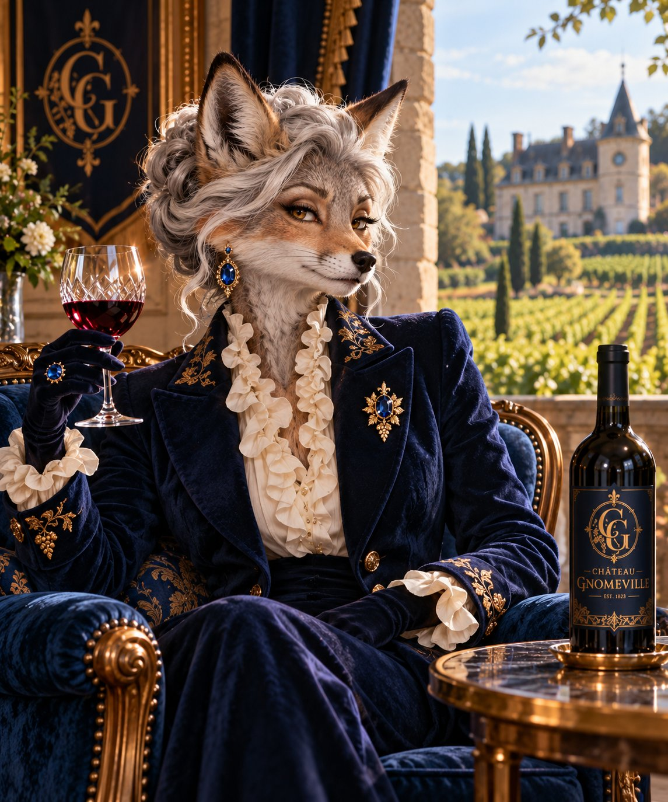
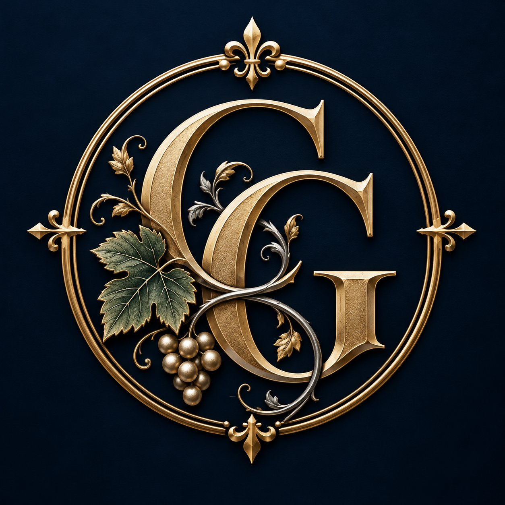
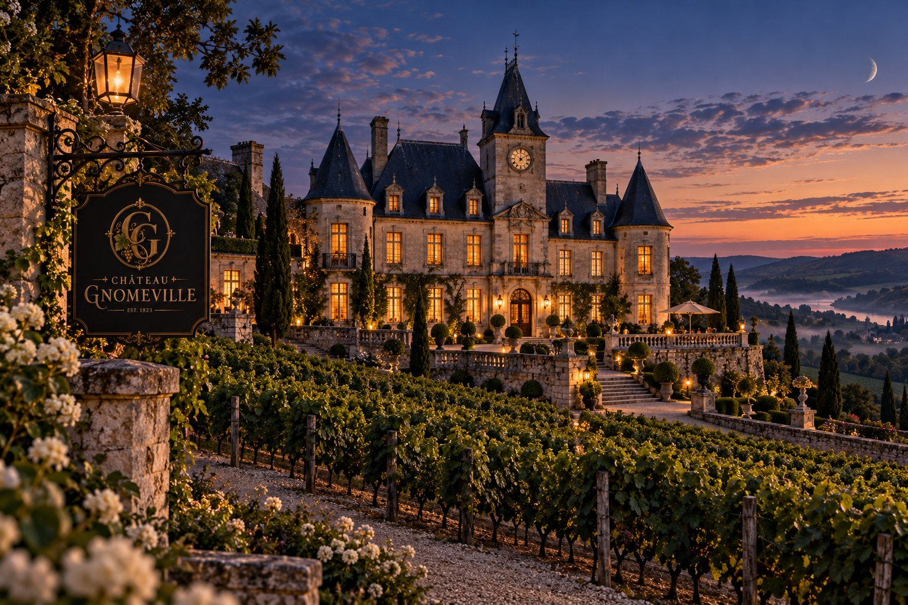
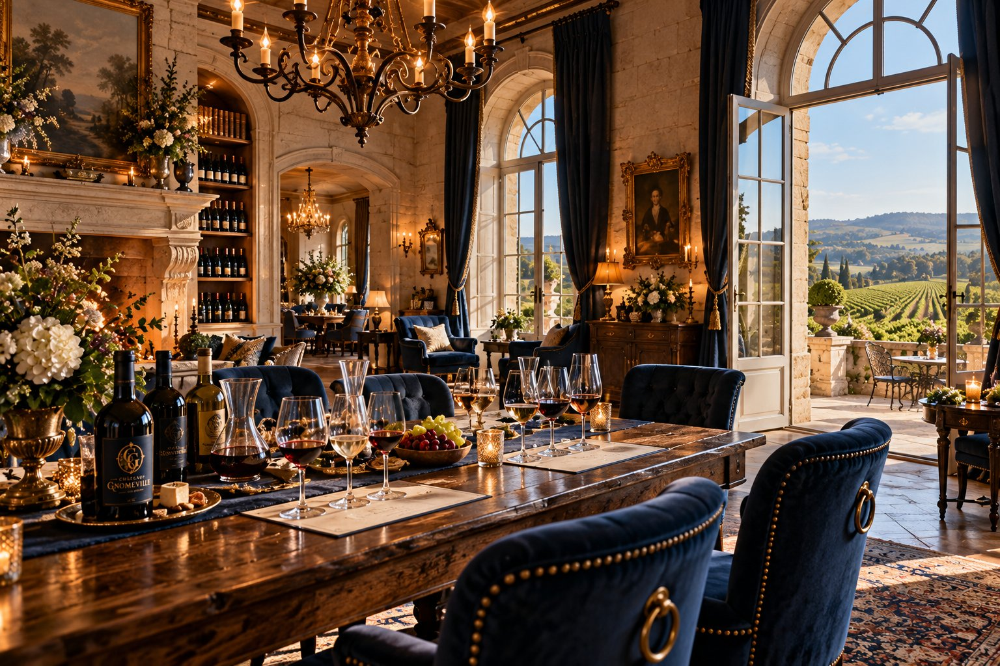
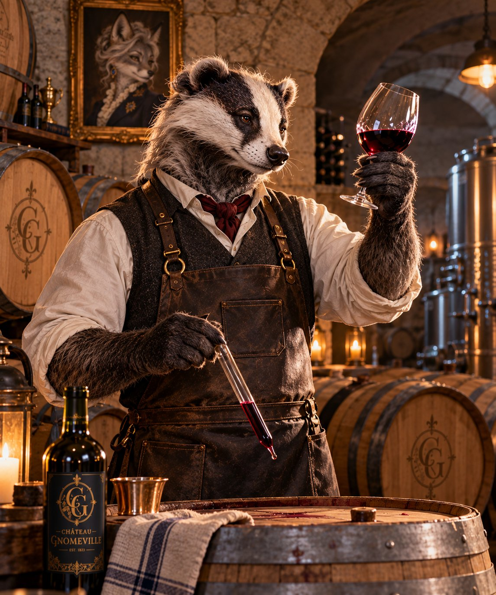

Madame Vivienne de Vigne
Proprietor and custodian of the estate. A discerning eye, a long memory, and an unwavering preference for discretion.

CHÂTEAU GNOMEVILLEFor generations, Château Gnomeville has pursued a singular ideal: wines of depth, distinction, and enduring character. Rooted in tradition and shaped by the seasons, each bottle reflects the patience of the estate.
Each wine tells its own story. Together, they reflect the character of Château Gnomeville.

Beyond the stone gates, the estate unfolds across cultivated vineyards, quiet terraces, and cellars shaped by nearly two centuries of tradition.
Here, every vintage is an invitation to discover something worth remembering.
Explore Our HeritageFrom intimate guided tastings to private cellar visits, Château Gnomeville offers a thoughtful introduction to the estate and its wines.
Our hospitality is unhurried, personal, and rooted in a simple belief: the finest moments deserve time.
Inquire About a VisitConcept demonstration: inquiries are not yet being accepted.

Château Gnomeville's history is written in its stonework, its cellars, and the quiet dedication of those entrusted with its stewardship. We invite the curious to look a little closer.
A small selection from the estate's personal records.

Proprietor and custodian of the estate. A discerning eye, a long memory, and an unwavering preference for discretion.

Cellar master. Keeper of vintages, records, and certain longstanding arrangements that have never required further explanation.
Estate Bottled · Château Gnomeville